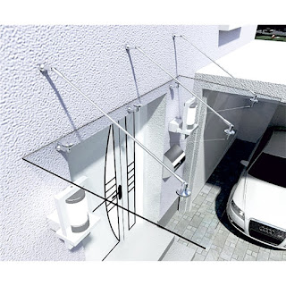
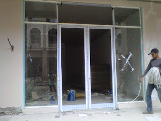
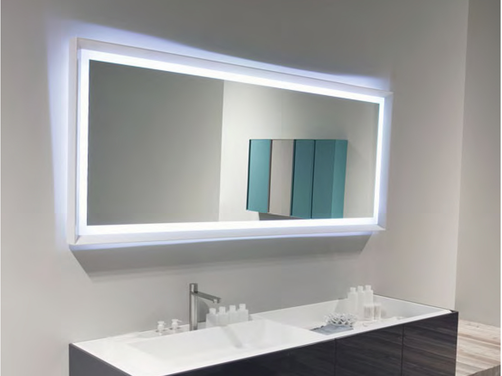
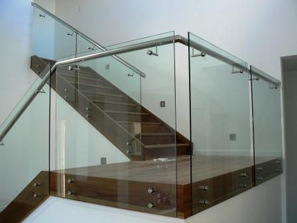
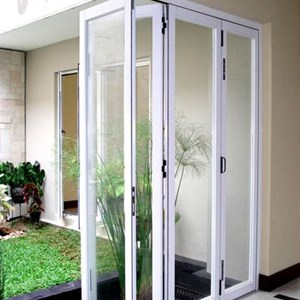

Kian berkembangnya kemajuan zaman, mewujudkan banyak bahan atau material komplementer yang bisa mempercantik hunian atau tempat usaha anda. Banyak material pendukung yang dapat dipakai seperti kaca, parket lantai kayu dan masih banyak lagi. Tidak cuma memperindah, tapi material pelangkap tersebut bisa memberi garansi keamanan pada penghuni di dalamnya. Kaca semakin melengkapi bangunan agar kelihatan lebih menawan dan mempunyai poin estetika jikalau di pandang orang. Kaca juga biasa digunakan sebagai material untuk pintu, furnitur, railing tangga, shower box, kanopi, table top, dan malahan panel dinding.
Sekarang telah hadir beraneka maca ragam kaca yang dapat dijumpai, tiap-tiap kaca memiliki fungsinya masing-masing. Bisa untuk system keamanan, keindahan dan masih banyak yang bisa di dapatkan dari pemasangan kaca. Tipe kaca-kaca hal yang demikian diantaranya yakni kaca tempered, kanopi kaca Kupang, kaca frameless, kaca cermin, railing kaca dan masih banyak tipe kaca lainnya yang bisa anda dapatakan dan anda aplikasikan pada bangunan. Tiap-tiap kaca mempunyai fungsi masing-masing yang membuat banyak orang semakin mebutuhkannya dari hari ke hari. Berikut ini sedikit ulasan mengenai kaca bagi sebuah banguanan, fungsi utama dan bagaiman memilih kaca yang sesuai untuk sebuah hunian bagus rumah, kantor ataupun gedung. Akan di jelaskan juga mengenai lantai kayu jati terbaik yang dapat anda beli.
Distributor, Supplier & Jasa Pasang Kanopi Kaca Kupang
kanopi kaca Kupang semakin banyak diminati sebab kini sudah banyak bangunan yang mengaplikasikan bahan kaca untuk lebih mempercantik tampilan rumah. Anda bisa memilih kanopi kaca Kupang yang pantas dengan keperluan dan harapan anda. Pengerjaan ini memang desain shower berbahan kaca memang lebih banyak diterapkan daripada desain shower berbahan tirai. Disinilah letak perbedaan optis yang utama antara akrilik (acrylic) dengan kaca. Apabila tembus pandang, kaca mengabsorpsi cahaya yang masuk sehingga semakin tebal kaca maka kian sedikit cahaya yang bisa melewatinya, maka sifat transparannya makin berkurang.|Di samping pintu kaca shower akan membikin kamar mandi kecil tampak lebih besar. Pada atap akrilik, penyerapan cahaya yang terjadi demikian kecil sehingga walaupun ketebalannya bertambah, sifat transparannya tidak banyak berubah. Atap akrilik atau dapat juga disebut atap kaca acrylic ini banyak ditemukan di sebuah bangunan rumah, seperti ruko, apartemen, resto, mall, hingga bangunan gedung.
Seiring dengan perkembangan dunia properti, sekarang kanopi kaca Kupang tempered sudah berkembang kencang meniru arsitektur modern. Terdapat banyak kanopi dengan beraneka ukuran dan ketebalan yang bisa anda pilih layak dengan yang anda butuhkan. Dis.or.id juga menyediakan jasa pemasangan kanopi kaca Kupang yang tentunya dengan bantuan energi professional yang telah berpengalaman. Jika fungsi utama kanopi sebagai pelindung untuk bangunan hal yang demikian, pemasangan kanopi kaca Kupang juga dapat membuat bangunan menjadi kelihatan lebih indah dan menarik, apalagi mengaplikasikan konsep yang sama dengan konsep rumah minimalis. Sesudah kaca untuk atap kanopi cukup digemari. Tak anda sedang mencari kanopi kaca Kupang, anda dapat langsung mengunjungi dis.or.id.
Info Lengkap Pemesanan
Google Maps: https://www.google.com/maps/d/u/0/viewer?mid=12-N5cMmHbEOEG6n-94L4JatnBnNRTFkr&ll=-7.27380280025364%2C112.65243155000007&z=18
Note: https://www.facebook.com/notes/distributor-of-industrial-supply/kontraktor-jasa-pasang-kanopi-kaca/1785710151728864/
Event: https://www.facebook.com/events/227495344457982/
Portfolio Produk: https://www.facebook.com/1681607345472479/photos/?tab=album&album_id=1712629809036899
Distributor & Supplier Kaca Shower
Semua orang pasti ingin punya kamar mandi yang kondisinya senantiasa bersih sehingga bisa terasa lebih nyaman ketika digunakan. Dan sensasi mandi menjadi lebih asik untuk dirasakan. Cara ini memang desain shower berbahan kaca memang lebih banyak digunakan daripada desain shower berbahan tirai. Tentunya banyak kelebihan yang dapat di temukan dari penggunaan kaca shower pada kamar mandi di rumah anda. Kecuali ini akan berimbas kepada biaya yang akan dikeluarkan untuk membayar tukang. Apalagi kini telah ada kios penjual shower screen yang menjual produknya dalam cara satu paket termasuk pemasangannnya.
Dis.or.id menyediakan kaca shower dengan mutu premium sehingga saat dipasang akan lantas menonjol mewah. Tidak hanya itu, kaca shower yang di beli di dis.or.id pemasangan lebih mudah dan fleksibel. Harga yang ditawarkan bahkan tergolong betul-betul murah. Anda bisa buktikan sendiri.
Distributor, Supplier & Jasa Pasang Kanopi Kaca
Pintu Kaca Shower pada kamar mandi yakni salah satu pilihan yang bagus untuk desain interior kamar mandi modern. Diantaraya yaitu kaca tempered 8 mm, kaca tempered 10 mm clear, kaca tempered 12 mm clear, kaca laminated 12 mm clear, kaca laminated 5 mm + 5 mm clear non tempered kaca, kaca laminated 5 mm + 5 mm tempered clear dan masih banyak lagi. Harga dari setiap kaca yang ditawarkan cukup beraneka tergantung kaca yang nanti akan diaplikasikan. Jadi sudah tak heran lagi segala orang berharap mencari harga yang benar-benar kompetitif untuk menyesuaikan budget atau anggaran mereka masing – masing untuk membuat produk canopy kaca. Ada banyak alternatif varian desain. Kalau tembus pandang, kaca meresap cahaya yang masuk sehingga semakin tebal kaca maka semakin sedikit sinar yang dapat melewatinya, karenanya sifat transparannya makin berkurang.|Di samping pintu kaca shower akan membuat kamar mandi kecil tampak lebih besar. Atap akrilik atau bisa juga disebut atap kaca acrylic ini banyak ditemukan di sebuah bangunan rumah, seperti ruko, apartemen, restoran, mall, hingga bangunan gedung.
Tidak anda dikala ini sedang memerlukan kanopi kaca Kupang, anda dapat langsung mengunjungi dis.or.id. Disana anda bisa menerima atap kanopi kaca Kupang dengan kualitas terbaik dan harga relatif murah. Dis.or.id juga menyediakan jasa pemasangan kanopi kaca Kupang yang tentunya dengan bantuan daya professional yang telah berpengalaman. Banyak bangunan seperti gedung perkantoran, perumahan, ruko dan apartement yang menggunakan kanopi kaca Kupang tempered. Sesudah kaca untuk atap kanopi cukup digemari. Tak anda sedang mencari kanopi kaca Kupang, anda bisa segera mengunjungi dis.or.id. Disana anda akan memperoleh kanopi kaca Kupang yang sesuai dengan bermacam-macam ketebalan dan harga yang cukup relatif murah.
Jasa Maintenance Kaca
Kaca benar-benar membutuhkan perawatan karena tiap hari terkena cahaya sang surya atau juga hujan. Dis.or.id memiliki energi pakar yang dapat mampu membersihkan gedung pencakar langit yang bangunannya terbuat dari kaca.
Apabila juga dengan warna dan format kaca.
Dis.or.id memahami semakin banyak gedung pencakar langit dengan betuk yang berbeda-beda. Dis.or.id juga sudah mempersiapkan dengan bermacam-macam alat yang dapat digunakan untuk menjangkau seluruh sudut gedung, sekalipun gedung Anda sangat tinggi. Oleh sebab itu, dis.or.id cuma memilih orang-orang yang amat profesional dan sudah mempunyai pengalaman dalam hal maintenance kaca. Kecuali cuma dalam hal membersihkan kaca, mereka juga mampu melakukan pembenaran serta penggantian kaca yang mengalami kerusakan.
Jasa Pemasangan Kaca Tempered

Semakin banyak orang yang berharap memakai kaca ini. Sementara itu, untuk rumah hunian, bagian dari rumah seperti kamar mandi serta kanopi biasanya terbuat dari kaca tempered. Selain sembarang tukang juga bisa menjalankan pelaksanaan pemotongan ini.
Bila itu, bermacam bagian properti akan kian menarik sekiranya diwujudkan dari kaca tempered seperti kanopi, pintu, kamar mandi, dan balkon.
Tidak anda berminat untuk memasang kaca temeperd, anda cuma tinggal mengunjungi laman dis.or.id. Sekiranya aman kaca tempered juga cakap memberikan kesan keindahan yang sangat bagus dibandingi dengan kata variasi lainnya. Lebih dari itu, dis.or.id sudah menyiapkan daya spesialis yang siap untuk menjalankan pemasangan, entah itu kaca tempered untuk kanopi, pintu, partisi, balkon, dan lain sebagainya.
Distributor & Supplier Pintu Kaca

Tak hanya di gedung atau perkantoran, melainkan pntu kaca juga bisa anda aplikasikan pada rumah agar sinar bisa segera masuk pada ruangan dan memberikan suasana hangat. Tersedia juga alumunium dan kayu seandainya Anda ingin memiliki pintu kaca dengan pigura. Tak Anda mau mempunyai pintu kaca lipat yang terdiri dari sebagian frame. Tersedia sebagian ragam kaca dengan kwalitas yang terbaik, mulai dari kaca tempered hingga yang non-tempered. Anda tinggal tentukan saja teladan pintu kaca seperti apa yang mau Anda miliki.
Anda dapat mempunyai pintu kaca unggulan anda kini juga dengan mengunjungi dis.or.id. Disana terdapat berjenis-jenis ragam pintu kaca yang dapat anda jadikan alternatif.
Terdapat juga pilihan lain berapa kaca non-tempered yang harganya relatif lebih murah. Dis.or.id mempunyai tenaga yang sudah sangat profesional di bidang ini.
Jual Kaca Cermin

Kaca cermin sekarang memiliki desain yang berbeda. Tapi, Anda semestinya memilih desain cermin yang unik, elegan, dan pantas dengan tema desain interior rumah Anda. Anda bisa memiliki pintu dengan bahan berupa kaca cermin. Ada beberapa keunggulannya. Salah satunya, kaca cermin ini bersifat refletif. Jadi, Anda mempunyai banyak opsi untuk memastikan cermin yang Anda pilih benar-benar dapat mempercantik interior rumah Anda. Malah juga komponen tepi. Kini perlu diamati juga ialah apakah Anda mau mempunyai kaca cermin desain minimalis atau yang elegan. Artinya, Anda tak bisa mengamati yang ada di dalam ruangan.
Bila sebagai bahan untuk pintu kaca, kaca cermin ini juga masih digunakan sebagai aksesoris cermin. Tidak saja, desainnya saja yang dirubah. Atau Anda dapat memilih cermin yang dibangkai dengan beragam variasi bahan seperti kayu, aluminum, plastik, dan bahan lainnya. Akan lebih menarik lagi jika Anda memakai kaca cermin ini sebagai bahan utama furniture. Sementara itu, Anda yang berada di dalam ruangan bisa memandang orang lain yang ada di luar. Tersedia kaca cermin dengan bermacam-macam ukuran yang dapat anda pesan di dis.or.id. Tak anda tertarik untuk memiliki kaca cermin baik sebagai pemanis ruangan atau sebagai pintu, anda bisa segera mengunjungi dis.or.id.
Jasa Pemasangan Railing Kaca

Railing kaca dapat membuat rumah Anda seperti itu kelihatan minimalis. Mungkin hal ini disebabkan semakin banyak pemilik rumah yang berkeinginan menampilkan sebuah desain interior rumah yang benar-benar minimalis. Karenanya dari itu, bagian-komponen tangga tak lagi dijadikan dengan bahan kayu. Bahkan aksesoris seperti pada pegangan tangga pun tak terbuat dari bahan kayu lagi melainkan kaca dan aluminum. Namun, selain desain, Anda juga perlu memperhatikan bahan yang diaplikasikan. Sebaiknya gunakan kaca tempered karena macam kaca ini sangat kuat. Jika itu, dari segi keamanan, kaca tempered ini juga pas kalau menjadi opsi Anda. Malahan juga bahan yang diterapkan.
Ada banyak opsi macam kaca yang dapat digunakan. Tak ini tidak hanya ditetapkan oleh ketebalan atau harga namun juga oleh tipe. Railing ini dapat dijadikan sebagai pembatas pada tangga dan juga sebagai pembatas pada balkon. Jika mensupport keamanan, railing kaca ini juga akan mempercantik desain interior rumah Anda. Dikatakan amat aman lantaran kaca tempered tak menimbulkan pecahan yang runcing dikala tiba-tiba kaca pecah entah itu imbas kecelakaan atau musibah seperti gempa. Kalau kaca, observasi juga aluminum yang menjadi bingkainya. Kini pasti, railing kaca ini menjadi alternatif yang tepat.
Kini dis.or.id sudah menyediakan railing kaca berkulitas dan berkualitas.
Distributor & Supplier Pintu Lipat Kaca

Pada kenyataannya, harga kaca tempered ini tak terlalu mahal. Mak dari itu, kaca ini ditawarkan dengan harga yang cukup dan relatif murah. Macam kaca nomor 6 ini benar-benar direkomendasikan untuk dijadikan sebagai bahan membuat pintu lipat kaca.
Banyak hal yang telah Anda ketahui perihal pintu kaca lipat tempered. Pastikan Anda memilih kaca tempered kualitas terbaik agar pintu lipat yang Anda pesan bisa dipakai dalam kurun waktu yang betul-betul lama. Hinges merupakan aksesoris vital, sebab aksesoris inilah yang berperan untuk menopang berat pintu kaca lipat.
Jasa Pemasangan Kubikel Toilet

Kubikel kaca banyak ditemui di bermacam-macam tempat besar seperti perkantoran, gedung, bahnkan sekarang juga dapat di pakai untuk hunian rumah. Namun, seiiring berkembangnya desain interior, kamar mandi pun bisa di sekat dengan penyekat dari kaca.
Dengan menggunakan kamar mandi kubikel tentnya kamar mandi yang anda miliki Menonjol lebih elegan dan mewan jauh dari kesan kumal. Sebab disana terdapat kubikel toilet dengan pelbagai ukuran serta ketebalan kaca.
Harga yang ditawarkan malahan cukup relatif murah.
Sebab disana terdapat beragam ukuran kubikel toilet yang dapat anda jadikan opsi untuk hunian atau temap usaha anda. Justru embun dapat melekat di kaca dan lambat laun dapat membuat kaca tidak sejernih semula. Kaca shower yang di jual di jamin kaca shower yang mempunyai kwalits terbaik dan berkualitas tinggi.
Distributor & Supplier Partisi Kaca
Partisi kaca sekarang tidak cuma di perkantoran modern atau pusat perbelanjaan. Kini, partisi kaca ini juga digunakan untuk rumah hunian. Biaya ini dilaksanakan agar menghemat biaya bangunan. Tidak sekali partisi ini lebih hemat membikin pembatas berupa tembok yang terbuat dari batu bata, pasir, dan juga semen. Atas pertimbangan efisiensi, banyak orang yang beralih ke partisi kaca. Kwalitas, banyak rumah hunian yang partisi kaca. Anda dapat mengikuti mereka. Selain, Anda semestinya tahu ada desain yang berbeda. Ada partisi kaca frameless atau tanpa pigura dan partisi dengan pigura. Selain itu, tentukan juga variasi kaca yang ingin apakah transparan, semi transparan, atau kaca cermin yang membuat ruangan privat. Selain itu, teladan partisi kaca ada yang frameless (tanpa frame) dan juga ada yang menggunakan pigura. Kalau anda untuk memasang dinding kaca penyekat, dis.or.id menyediakan jasa pemasangan dinding kaca penyekat untuk kamar mandi rumah anda.